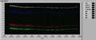

体重オーバー６０ｋｇ、体脂肪率１９％強。
一時ほどではないものの、見た目も若干ふっくらしてきた感じはある（汗 少し意識してみることにしよう。しかし、おととい昨日と61.2～3Kgだったのに今日量ったら1Kg以上増。体脂肪量は増えていないので、夕べ夜中に食べた坦々麺の水分ですかね…？でも１ｋｇも増えるのか？
人の話によると暴飲暴食で１～２ｋｇ一日で増えることもあり、気をつけていれば数日で元に戻る、で、その正体はほとんど水分なんだそうで。
あまり暇でもないんで、積極的に体脂肪を落とすようなことができないのがつらいところだけども、その代わりというわけではないけど、さらなる標的設定。
老眼克服のための運動をやろう！
http://www.rougan.net/450/post_38.html
に出ている「調節訓練」だけど、一回数十秒を一日四回以上。やってみると四回でも結構やるのが大変なんだけど(景色のいい部屋にいればしょっちゅうできるだろうけど)。
これは、今のところヴィジュアライズする方法がないんで、ただ「やってます」としか言えない所がいまいちおもしろみにかけるのだが…。
定期的に検眼して結果を載せればいいのかな？
ま、その辺はおいおい考えましょう。